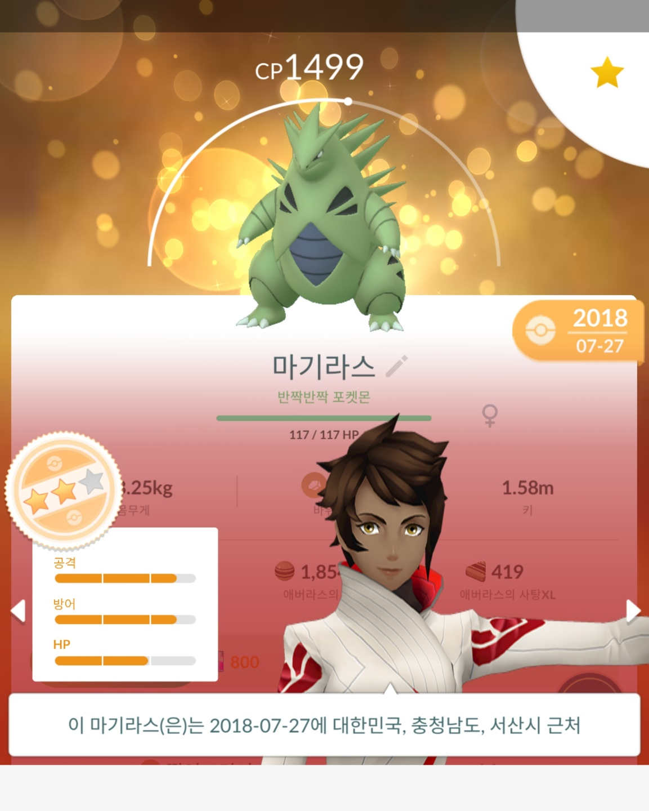

<!doctype html>
<html>
<head>
<title> 개체값 가이드 - HTML </title>
  <head>
    <meta charset="utf-8">
  </head>
  <body>

  </body>
</html> </title>
<meta charset="utf-8">

<body>
  <h1><a href="index.html"> 개체값</a></h1>
  <h3>작성자: shadow,(shadeshadow)
    <ol>
      <li><a href ="개체값과 관련된 용어.html"> 개체값과 관련된 용어들 </a></li>
      <li><a href ="개체값 설명.html"> 개체값 설명</a></li>
      <li><a href ="PVP, 레이드 개체.html">pvp 개체와 레이드 개체</a></li>
      <li><a href ="개체값이 변하는 경우.html"> 개체값이 변하는 경우</a></li>
      <li><a href ="최소 개체값.html"> 최소 개체값</a></li>


    </ol>
  <h2>게체값에 대해</h2>
  <p>개체값은 공격, 방어, 체력에 추가로 더해지는 값입니다.<br>이 수치는 0 ~ 15까지의 범위를 가지고 있습니다.
  <br>비유를 하자면, 포켓몬이 얼마나 성장을 할 수 있는지, 그 잠재력을 수치화하여 숫자로 표현했다고 보시면 됩니다.
    <br><br>
    <br><br>사진에서 보시다시피 표로 개체값이 표현된 모습입니다.
    <br>그러면 이제 개체값이 무엇인지, 그리고 <strong>왜 중요한지</strong> 알아보는 시간을 갖도록 하겠습니다.
    <br>상단 목차에서 원하시는 챕터의 내용을 읽어보세요~
  </p>


</body>


</html>
